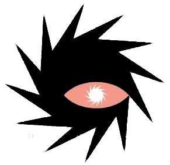

Introducing
Neville Brody’s designs were described as a new visual language when they first came to surface around 1980. His innovative style of a mixture of visual and architectural elements were first condemned as ‘uncommercial’ during his time at the London College of Printing, where they preferred ‘safe’ economic strategies to experimentation. Since then Brody has went on to design for a range of different areas including designs for record covers, magazines, clothing and rebranding for major companies. What interested me about Neville Brody was how his style was so diverse; I am interested in how working across a variety of platforms keeps his work so fresh. This ability to not stick to a signature style or to one area has given him a chance to delve into the specific qualities of each medium.
Early Years
It all started for Neville Brody in Southgate, North London. He had grown up with a natural love for art and design and went on to study it at A-level, but always from a Fine Art perspective. Brody then went on to pursue Graphic Design after a Fine Art foundation course at Hornsey College of Art made him realise that the world of fine art was too elitist and his work would only appeal to a specific gallery market; whereas graphics would offer a better range of possibilities. However, he didn’t completely leave his fine art side behind. He asked himself the question
“Why can’t you take a painterly approach within the printed medium?”
…And so, that’s exactly what he did. Brody took inspiration from the world around him; at the time the streets of London were being effected by the punk era and so he seized the chance to use this movement as inspiration for his work. This rebellion within his work nearly landed him expulsion from college when one of his postage stamp designs featured the queen’s head sideways, which was very frowned upon. But this didn’t stop Brody from continuing to explore new boundaries within graphic design, he went on to focus his first-year thesis on the comparison between Dadaism and pop art. There were no controlling rules or principles to give order within the Dada movement. Members of the movement wanted it to be all about disorder and realise that art should not only be a serious subject dominated by paintings. They created chaotic images from photomontages, cut-up newspapers, collage and really anything appropriate and declared them ‘ART.’ This movement, along with futurism and constructivism influenced Brody to discard the rules and devise a different style within his work, leading him to then devise a variety of different styles of typography that worked against the conventional.
Career
Brody started his career as a record cover designer. Looking particularly at the record sleeves he produced for Fetish Records from 1980-1982 we can see prime examples of how the energies of punk effected his work. The approach he took to his record sleeves was thought to have provided a completely new direction within the industry but was quickly passed over as the decade progressed. He was known to incorporate hand crafted elements (usually printed, painted, cast or carved). For the 23 Skidoo sleeves he created three-dimensional plaster hands that were then photographed and manipulated.
1981 drew the year when Brody started working for the magazine ‘The Face’ (which was championed as “the fashion bible” of the 80’s. He brought an interesting thesis to the idea behind his radical thinking for the layout of the magazine. His opinion was that reading a magazine differs from reading a book.The manner in which you read a book from left to right religiously is ignored and instead the reader would simply jump back and forth about the page picking out the interesting bits. His idea was to use type to guide the readers to the most important areas of the article. He played with different colours, sizes and shapes of type all laid out on the same page. In his official designs for ‘The Face’ he arranged different sizes of type in diagonals or in circles, almost in a way that was giving them as much importance as any titles or images on the page. To separate different articles of topics he created little logos and instead of page numbers he used symbols almost as a form of code. Brody even created a new style of typeface to be exclusively used for the magazines. It was based around an elongated style with no serifs but modern, curved ends. This attention to detail was one of the things that helped make ‘The Face’ magazine the most influential style magazines of the 20th century.
Brody became known to the world around 1988, when a book on his collective designs, ‘The graphic Language of Neville Brody’ was published and he displayed his work in an exhibition at London’s Victoria & Albert Museum. Brody was now working for the magazine ‘Arena’ until 1990 when he felt his work had been copied too much and decided to take a stand which resulted in him not wanting to make any more new statements what-so-ever. After this he began to create simple fonts to avoid making anything too bizarre for a period of time.
While this was going on, he had also opened his own London studio in 1987. He soon realised that it was overseas clients that were being more supportive towards his work ideas, which was to embrace the potential of the computer and to provide companies with the templates they wanted from his own studio.
In 1990, Brody teamed up with Stuart Jenson to open ‘Fontworks’, which is now the world leading design and creation of custom fonts. Through this Brody then became the director of ‘Fontshop.’ And then with this experience of working with digital typography the transition into creating digital images was easy to see.
Brody’s style would be described within the modernism movement and its clarity, but the world had started to question if Brody had come dangerously close to confusing his audience with typographic babel? In an interview with Eye Magazine in 1992 he argued his case explaining how there is two sides to this broad movement, “one of which I wholly support, which is that modern communications should be humanistic, expressive and benefit the people.” On the other hand he explains that the other side is “the fascistic one that dictates and expects everyone to conform. I will do anything to support individual means of expression and if this means there are a million typefaces, I’ll support that, because I think people should have as much choice as possible.” It was after this that, along with Erik Spiekermann, Brody founded ‘FontFont’ a library of original contemporary typefaces that has today become the world’s largest, with 177 designers and counting involved.
Going back to FontShop International in 1991, Brody and Stuart Jenson had now decided to launch an experimental type magazine called ‘FUSE.’ It was a disc based magazine that’s content included new typography that allowed the user to interact with them. Each issue was published regularly with a different story (the story being a new typeface). The idea behind this project was to make the world aware of the new computerised technology that was now available. Brody saw the computer as a tool that could be used to communicate, just as similarly as a painter would communicate through a canvas, he wanted to fight the preconceptions about the computer.
In a 1992 interview Brody declared, “There is still a place for printed work, but I think we have only just begun to explore the potential of electronic media”. Evidently he was correct, and since then he has went on to use electronic media across a variety of platforms to establish his creative visions. He has created redesigns for major British newspapers such as The Guardian online and The Times newspaper. It was his newly created font, Times Modern that was set as the first new font for The Times since it introduced Times New Roman in 1932. Aside from this, Brody has branded identity’s both online and offline for a mass of companies during his career. Significant projects that Brody has perused include designing the typeface for the England football teams’ 2014 kit, the identity for ‘Dom Perignon’ vintage champagne, the clothing brand ‘Supremes’’ capsule collection 2013 and the fonts for ‘Channel 4’s’ rebrand 2015.
Conclusion
Neville Brody’s style initially stemmed from his rebellious attitude to stand out from the crowd, from the influences of the punk era and Dadaism, he has been able to pursue a career that has taken him on an array of different journeys and allowed him to truly explore every aspect of graphic design. Looking at his work on a timeline we can see how he has moved with the times and embraced new technology as a means of communication and style.